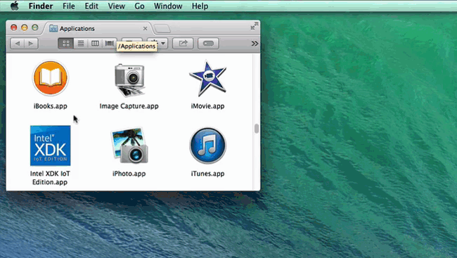
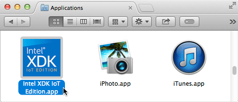
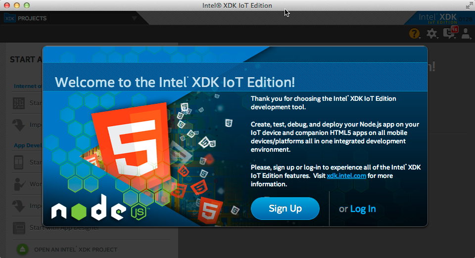

Step 2: Launch and sign into Intel® XDK
Before you can use the Intel® XDK, you must sign up for an Intel® XDK account or log in to a pre-existing account.
Note: You will need to have an internet connection for the first time you launch the Intel XDK.

-
Launch Intel® XDK IoT Edition.

-
Follow the on-screen instructions to sign up for an Intel® XDK account, or log in to a pre-existing account.
